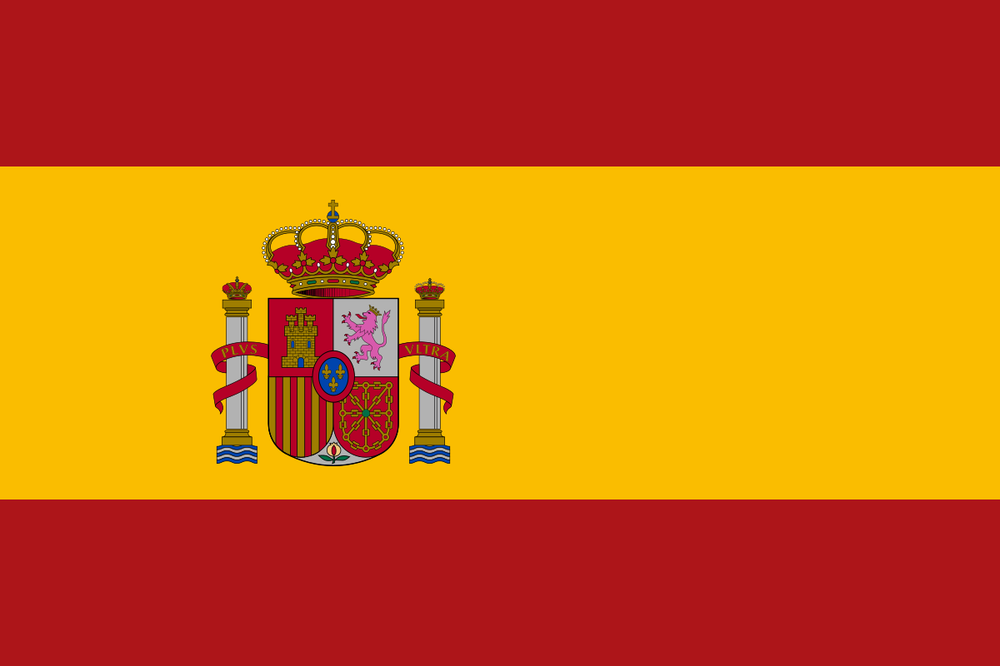
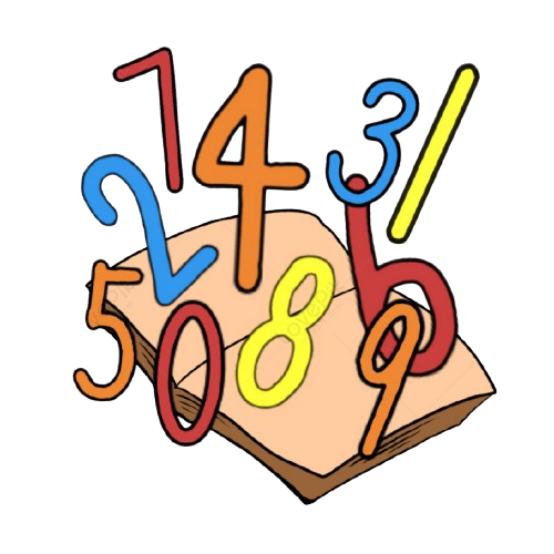
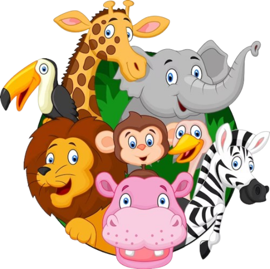

<ion-header>
  <ion-toolbar>
    <ion-button class="btn-logout" expand="block" (click)="logOut()"><ion-icon name="enter-outline"></ion-icon></ion-button>
  </ion-toolbar>
  
</ion-header>

<ion-content [fullscreen]="true">
  <div class="elements">
    @for (item of arrayOptions; track $index) {
      <ion-button class="card" (click)="listenAudio(item.value)">  </ion-button>
    }
  </div>

  <ion-fab slot="fixed" vertical="bottom" horizontal="start">
    <ion-fab-button>
      
    </ion-fab-button>
    <ion-fab-list side="end">
      @if (language != 'castellano') {
        <ion-fab-button (click)="setLanguage('castellano')">
          
        </ion-fab-button>
      }
      @if (language != 'ingles') {
        <ion-fab-button (click)="setLanguage('ingles')" >
          
        </ion-fab-button>
      }

      @if (language != 'portugues') {
        <ion-fab-button (click)="setLanguage('portugues')">
          
        </ion-fab-button>
      }
    </ion-fab-list>
  </ion-fab>


  <ion-fab slot="fixed" horizontal="center" vertical="top" class="fab-horizontal">
    <ion-fab-button>
      
    </ion-fab-button>
    @if (option != 'numeros') {
      <ion-fab-list side="end">
        <ion-fab-button (click)="setOptions('numeros')">
          
        </ion-fab-button>
      </ion-fab-list>
    }
    @if (option != 'animales') {
      <ion-fab-list side="bottom">
        <ion-fab-button (click)="setOptions('animales')">
          
        </ion-fab-button>
      </ion-fab-list>
    }
    @if (option != 'colores') {
      <ion-fab-list side="start">
        <ion-fab-button (click)="setOptions('colores')">
          
        </ion-fab-button>
      </ion-fab-list>
    }
  </ion-fab>


</ion-content>